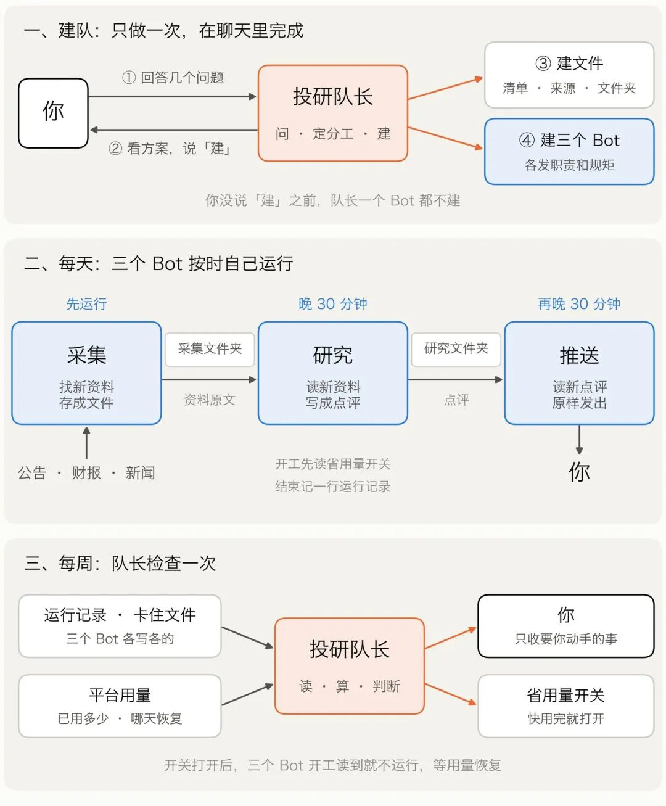

用上 Grok Bot 已经一个礼拜了，也开始逐步熟悉他的习性。目前他的定位就是作为我的交互入口、中转站和部分数据源的录入。
Grok 本身的模型不错，但是用来做深入的研究还不够，日报周报的梳理又太浪费。好钢用在刀刃上，他的交互、agent 的编排、以及云端电脑可以登录抓数据的优势，让他作为中转站是再好不过了。
搭建体系是一个复杂的过程，掌握一些基础的原则，先快速上手，用起来，再逐步改造成一个系统是更好的方式。
最近在学习《软件设计哲学》，程序的简洁和好用是划等号的，和搭建组织的原则也非常像。虽然具体的案例有些看不懂，但能理解背后的降低复杂度、更加易用、易理解的逻辑，非常有意思，大家如果想培养自己的开发审美，可以去看看这本书，强推。
今天这篇教程，主要分享一下 Grok Bot 的基础原则，最后建立你的投研队长，先用起来少踩坑。
约3700字 · 阅读约10分钟
本文目录
• 一、一个岗位一个 Bot，记忆跟着岗位走
• 二、第一条消息讲清职责，让它记住，别只给一个名字
• 三、先看着他跑对一遍，做成 Skill，再做成定时任务
• 四、云电脑是共用的，数字以文件为准，别信记忆
• 五、省额度：新任务开新对话，长文存文件，定时别太密
• 先建一个「投研队长」
• 最后一公里，真难跑
一、一个岗位一个 Bot，记忆跟着岗位走
先说一个很多人没注意的设定：每个 Bot 的记忆是单独存的。工具和技能整个账号共用，但 A 记住的事，B 不知道。你复制一个 Bot，设置、技能和定时任务都会带过去，聊天记录和它学到的东西带不过去。
所以最顺的用法，就是一个岗位配一个 Bot，记忆跟着岗位走。
我现在的分工是这样：
| 小豆子 | |
| 微信桥 | |
| 投资广播站 | |
| 兜底哥 | |
| 健康管理大师 | |
| 采集 | |
| 媒体大师 | |
| 日程助理 | |
| 学习大师 |
这套分工是一路踩坑改出来的
微信桥原来叫协调哥，原先我想把它作为协调所有 agent 的角色，但其实这个角色默认让入口和主 agent 承担。所以当他在帮我分配任务的时候，小豆子也在转。入口等于有两个，两个的记忆还不通，谁也不知道对方派过什么活，搞得非常的混乱。后来我只留小豆子一个入口，每件事只派给一个负责人。
协调哥我之前连接了微信，所以就让它变成一个微信入口了。这类似 OpenClaw 的连接方法，你只需要告诉 Grok Bot，你要连接微信，让他去找办法就行了，推特上有教程让他自己读。不过不好用，微信 24 小时不主动发信息，这个通道就静默了。
这个导致的结果就是任务的重复，采集每天 7:30 去一个网站抓当天的新资料，投资广播站名下还挂着一条一模一样的任务，8:00 再抓一遍。两个都在干，两个都在花额度，我一直没发现。直到让投资广播站报一遍自己名下的定时任务，才看到这条。
这里有个顺序问题：别一上来就建一大队 Bot。先用一个主 Bot 把日常跑通，比如读公告、写异动点评、存到 Drive。等一个窗口里事情太多、开始互相干扰，再按专长拆出去。
拆之前问自己一句：这个 Bot 管什么，能不能一句话说清楚？说不清楚，就先别拆。
二、第一条消息讲清职责，让它记住，别只给一个名字
第二个问题，就是新建 agent 的时候没讲清楚要他干嘛，导致他们的描述是空的，交易员和推特冲浪这两个 Bot，职责设定是空的，只有一个名字。
只有名字，Bot 不知道自己该管什么、不该管什么，别的 Bot 也没法判断活该不该派给它。后来推特冲浪要接手几条采集任务，我把它改名「采集」，把职责一条一条跟它讲清楚、让它记住，它才算正式上岗。
现在的版本里，个人 Bot 已经没有单独的描述栏了，职责要在聊天里讲，讲完明确让它「记住」。第一条消息讲清四件事就够：
1. 管什么。比如：每天盯模拟仓股票的异动。
2. 怎么干。读哪些来源，输出长什么样，一段话还是一张表。
3. 不管什么。比如：只抓资料，不写观点；只写点评，不管推送。这条最容易漏，漏了它就可能顺手把别人的活也干了。
4. 什么必须先问我。比如删文件、改模拟仓、把没核对过的数字发出去。
讲完让它用自己的话复述一遍。复述对了，再给它一个真实的小任务，写清楚做到哪一步算完。工具和连接也一样，只开它这个岗位用得上的，用不上的别开。
所有 Bot 共用的规矩，我是这几句：
用中文大白话，先说结论。不用比喻、反问和套话。
事实、数字、引文写清来源和日期。自己的推断标「我的判断」。查不到就说查不到，不编。
不交易、不删除文件、不改规则文件，也不替我回复邮件或消息，除非我当场明确要你做。
每个 Bot 再在这基础上加自己岗位的几条。
还有一点容易混：长期规则和单次任务要分开。
• 长期规则：比如「模拟仓数字以 Drive 里那张表为准」，要明确跟它说「记住」。
• 单次任务：比如「给这三只票写今晚的异动点评」，留在当次聊天里就行。
混在一起，要么它把一次性的要求当成永久规矩，以后每次都照做；要么把真正该一直守的规矩忘了。
三、先看着他跑对一遍，做成 Skill，再做成定时任务
顺序是这样：
1. 你看着它做一遍，哪里不对当场纠正。
2. 做对了，让它把步骤整理成一个 Skill。
3. 再跑一两次，确认能一次跑通。
4. 最后才设成定时任务。
很多人第二天就想挂定时，我也是。问题在于：定时任务出错了不会自己停下来，它会每天准时把错再犯一遍。
我也犯过这个错误。采集名下有一条每天抓资料的定时任务，有一阵子运行记录天天写「成功」。我一核对，那几天新进归档的资料是 0 份。
原因说起来很蠢：它手里有一份「已经下载过的清单」，这份清单停在了好几天前。于是它每一轮都把我早就有的旧文件再下一遍，下完就报成功。活确实干了，干的全是重复的活。
改了三处：
1. 只算真正新增的份数，全是重复的不算成功。
2. 连续 72 小时没有新东西就响铃提醒我。
3. 定期把最新的清单同步给它。
这件事之后，我在设置定时任务之前，都要让他先跑一次测试，保证任务能成功完成。
四、云电脑是共用的，数字以文件为准，别信记忆
云电脑是共用的，记忆是各自的，这两样都不是 100% 的最新正确版本。
先说电脑。同一个账号下的所有 Bot，用的是同一台云电脑。浏览器的登录状态、文件、命令行里存的密码，全都共享。每个 Bot 有自己的屏幕，但那块屏幕只是和你交互的，存下来的内容都是一样的。
我这边最直接的例子是要登录的资料网站。采集每天抓资料用的就是同一个浏览器里的登录状态。很省事，任何一个 Bot 打开那个浏览器，都已经是登录好的。所有 Bot 直接登录去读取就行。
再说记忆。股价、模拟仓、财报数字天天在变，Bot 记住的是它上次看到的数，但记忆不共享，可能最新的数据在别的 Bot 的执行里面。我的做法比较死板，直接写进了规矩：
规则只认文件，不认记忆。你记忆里的规则和文件不一样时，以文件为准。
数字也一样。模拟仓的止损价，我只认一张每天早上更新的表，Bot 每次要用都现读，不许凭记忆报。
还有一个原因：我的规则文件不只 Grok Bot 在读。有些活小豆子会转给 DeepSeek、MiniMax 这些别的模型去做，它们和 Bot 之间互相看不到对方的记忆，能共同读到的只有文件。所以规则一变，我只改文件，再让投资广播站每天早上 7:50 读一遍更新日志，把和它有关的变化记下来。改规则的和用规则的不在同一个对话里，只能靠文件对齐。
五、省额度：新任务开新对话，长文存文件，定时别太密
先讲额度花在哪。Bot 每回复你一次，每个定时任务每叫醒它一次，它都要把这个 Bot 的整段聊天记录重读一遍。聊得越久，每一步越贵。有人导出过自己的用量，大约 78% 的 token 花在重读旧对话上，真正新写出来的只有 1% 左右。这是别人的数据，每个人用法不同差别会很大，但方向我认同。
我自己也是这样：周额度已经用掉 68.8%，查了一下发现全都是 agent 之间的对话，和内部的垃圾 context 重复。离重置还有两天多。按当时的速度算，会在重置前大约 17 个小时用完。
我先做了个省额度开关。小豆子定时查一次额度，算下来撑不到重置，开关就打开。大部分定时任务第一步读到开关就直接退出，只留模拟仓的止损提醒、小豆子的聊天、额度检查这几样。
然后找空转的任务。微信桥（当时还叫协调哥）有一条任务负责把财报点评转到微信，做法是定时去看有没有新点评。一周空跑约 56 次。现在改成有新点评才触发。
给大家的做法，按我觉得有用的程度排：
• 新任务开新对话。一件事做完，下一件换个干净的对话。对话太长时，先让它把该长期守的规矩记住，再开新的。
• 长资料存成文件。研报、10-K、网页全文存进文件，聊天里只回结论和文件位置。
• 定时别设太密。先把每个 Bot 名下的定时任务列出来，算一下一周跑几次。我那条一周 56 次就是这么查出来的。
• 没新东西就别说话。每次回一句「暂无异动」，这句话也会进聊天记录，下次重读更贵。
• 一件事一条消息说清。目标、材料、输出格式、做到哪一步停，一次写完。「不对，我是说……」每多一轮，就多重读一次。
先建一个「投研队长」
说完了基础原则，我们要开始启动了。
我把它做成了一个可以直接添加的 Bot，叫「投研队长」，点阅读原文链接（或者复制）就能装：https://x.ai/bot/ZP4a0VACoL-ru9UDdsCil
装好后给它发第一条消息，它会先问你几个问题。之后它帮你做三件事：
1. 建队，只做一次。它问你盯哪些股票、去哪里看消息、每天几点收、想要哪种点评。想快一点，只答 3 个问题，其余用默认值。然后它给你一份分工方案，默认 3 个 Bot：采集、研究、推送。你说「建」，它才动手。建好后用你自己的资料试跑一遍，走通了再让每个 Bot 设定时任务。
2. 每天，三个 Bot 按时自己运行。采集去你指定的地方找新资料，存成文件。研究读新资料，写大涨大跌的原因或财报点评。推送把写好的点评发给你。没有新东西就不发消息。
3. 每周，队长检查一次。它查这周用量用掉多少、每个 Bot 运行了几次、哪个 Bot 卡住了、有没有两个定时任务在做同一件事。用量快不够时，它会打开省用量开关，让大部分定时任务先停下。有需要你动手的事，它才发消息给你。
整个小队不买卖股票、不删文件、不替你回消息，除非你当场同意。

我自己的队伍比这个复杂，但最早能跑起来的，也就是采集、研究、推送这三环。先把三环跑顺，再按需要加人。
最后一公里，真难跑
其实现在一键就能够生成一个 80 分的投研系统。但是 80 分还远远不够，后续添加的每一个任务和功能，都会为这套系统增加复杂性。例如可能会导致 bug，引发冲突，或者是没有经过检查导致推送了错误的信息和解释，这些都是无法忍受的。
最近发现我的系统就是越加越乱，各种报错，修了一个结果出来另外两个错误，因为有一些任务共用了不该共用的数据和脚本。所以开始用深模块，减少信息泄露等等软件设计哲学的理念，来审查自己的系统。真的减少了很多冗余。
找到更好的工具，逐步打磨自己的系统，让他保持简洁的同时变得更加好用，就像一个孩子在河边磨自己心爱的石头一样，真的很有意思。AI 落地的最后一公里真的很难，但恰恰是难，反而更有价值，之后再逐步更新一些有意思又简单的模块给大家。
大家有什么有意思的 Grok Bot 的用法和原则，或者是问题都欢迎在评论区留言！
参考资料
• xAI 官方指南，Eric Zakariasson《How I run multiple teams of Grok Bots》（建队规矩：先复用、新建须本人同意、卡住标出来）：https://x.ai/bot/guides/how-i-run-multiple-teams-of-grok-bots
• xAI 官方指南，Matt Palmer《Grok Bot 101》：https://x.ai/bot/guides/grok-bot-101
• xAI《Designing Grok Bot for a world of persistent agents》：https://x.ai/news/designing-grok-bot
• 官方文档《Create and manage Bots》（每个 Bot 记忆单独存、复制 Bot 带走什么、什么时候单独建 Bot、第一条消息交代什么）：https://docs.x.ai/grok-bot/bots
• Cursor 文档《Work with Grok Bot》（共用云电脑、长期规则与单次任务、Skill 与定时任务）：https://cursor.com/cn/docs/grok-bot/work
• @johnAGI168 按岗位拆 Bot：https://x.com/johnAGI168/status/2116574459318460725
• @AdrianPunk115《用Grok Bot搭建自媒体团队：保姆级教程》：https://x.com/AdrianPunk115/status/2097311704547987756
• @poteto 首次试用建议（先一个 Bot 跑通再加岗）：https://x.com/poteto/status/2107830403549831186
• @poteto 建 Bot 短指南（少而精、让 Bot 自己建 Skill、语音口述后让它复述）：https://x.com/poteto/status/2116576229319233596
• dr eggbot（poteto 公开的造 Bot 助手）：https://x.ai/bot/_jOdbfkB16zxu7MRcmReE
• @silentguyy66《Grok Bot Setup: Write the Contract, Not the Job Title》：https://x.com/silentguyy66/status/2108957020187468171
• @petergyang 访谈帖（先在聊天里做对，再做 Skill 和定时任务）：https://x.com/petergyang/status/2104213287353356531
• @GrokBotRadar 额度分析（78% 花在重读旧对话）：https://x.com/GrokBotRadar/status/2114470359001178114
• @0xKingsKuan《Grok Bot 额度两天就爆？》：https://x.com/0xKingsKuan/status/2113541121892921683